<meta charset="utf-8">
<title>Schichtlicht Konzepte</title>
<meta name="claude:viewport-fit-sides" content="cover">
<link rel="preconnect" href="https://fonts.googleapis.com"><link rel="preconnect" href="https://fonts.gstatic.com" crossorigin>
<link rel="stylesheet" href="https://fonts.googleapis.com/css2?family=Gloock&family=Hanken+Grotesk:wght@400;500;600&family=IBM+Plex+Mono:wght@400;500&display=swap">
<style>
/* Layout: a night gallery, the same dark studio the renders were shot in; one deliberate dark look. */
:root { --bg:#0c0e10; --panel:#13161a; --ink:#ecebe6; --muted:#8f9894; --line:#252a2e; --glow:#f0a640; --ok:#6cc18f; --warn:#f08a4b;
  --display:"Gloock",Georgia,serif; --body:"Hanken Grotesk","Helvetica Neue",Arial,sans-serif; --mono:"IBM Plex Mono",ui-monospace,Menlo,monospace; color-scheme:dark; }
* { box-sizing:border-box; }
body { margin:0; background:var(--bg); color:var(--ink); font:400 15px/1.5 var(--body); }
.wrap { max-width:84rem; margin:0 auto; padding-left:max(16px,env(safe-area-inset-left,0px)); padding-right:max(16px,env(safe-area-inset-right,0px)); }
.top { padding-block:48px 24px; display:grid; gap:20px; }
.top h1 { font:400 clamp(44px,8vw,96px)/.95 var(--display); margin:0; letter-spacing:-.01em; }
.top h1 span { color:var(--glow); }
.top p { margin:0; max-width:46rem; color:var(--muted); font-size:17px; }
.bar-top { position:sticky; top:env(safe-area-inset-top,0px); z-index:5; background:color-mix(in srgb,var(--bg) 90%,transparent); backdrop-filter:blur(8px); border-bottom:1px solid var(--line); }
body::before { content:""; position:fixed; inset:0 0 auto; height:env(safe-area-inset-top,0px); z-index:10; background:var(--bg); }
.bar-top .wrap { display:flex; gap:10px; align-items:center; padding-block:12px; flex-wrap:wrap; }
.chip, .switch { font:500 13px/1 var(--body); padding:9px 14px; border-radius:999px; border:1px solid var(--line); background:transparent; color:var(--ink); cursor:pointer; }
.chip[aria-pressed="true"] { background:var(--ink); color:var(--bg); border-color:var(--ink); }
.switch { margin-left:auto; display:inline-flex; align-items:center; gap:8px; }
.switch::before { content:""; width:9px; height:9px; border-radius:50%; background:var(--muted); }
.switch[aria-pressed="true"]::before { background:var(--glow); box-shadow:0 0 10px var(--glow); }
button:focus-visible, .card:focus-visible { outline:2px solid var(--glow); outline-offset:3px; }
.count { font:400 12px var(--mono); color:var(--muted); }
.line { padding-block:40px 24px; border-bottom:1px solid var(--line); }
.lh { display:grid; grid-template-columns:auto minmax(0,1fr) auto; gap:8px 24px; align-items:baseline; margin-bottom:24px; }
.lh h2 { font:400 clamp(32px,5vw,56px)/1 var(--display); margin:0; }
.lh p { margin:0; color:var(--muted); max-width:44rem; }
.lh span { font:400 12px var(--mono); color:var(--muted); }
.sub { font:500 12px var(--mono); letter-spacing:.12em; text-transform:uppercase; color:var(--muted); margin:36px 0 16px; }
.grid { display:grid; grid-template-columns:repeat(auto-fill,minmax(220px,1fr)); gap:28px 18px; }
.grid.stacks { grid-template-columns:repeat(auto-fill,minmax(260px,1fr)); }
.card { display:grid; gap:12px; align-content:start; min-width:0; cursor:pointer; }
.img { position:relative; aspect-ratio:4/5; background:#d9dcd6; overflow:hidden; max-width:100%; }
.img img { position:absolute; inset:0; width:100%; height:100%; object-fit:cover; display:block; transition:opacity .5s ease; }
.img img.on { opacity:0; }
body.lit .img img.on { opacity:1; }
.card.flip .img img.on { opacity:1; }
body.lit .card.flip .img img.on { opacity:0; }
.txt { display:grid; gap:6px; min-width:0; }
.ey { margin:0; font:400 11px/1.3 var(--mono); color:var(--muted); text-transform:uppercase; letter-spacing:.08em; }
.ey code { text-transform:none; letter-spacing:0; font-size:11px; }
.txt h3 { margin:0; font:400 26px/1.05 var(--display); }
.txt p { margin:0; font-size:14px; color:#c7cbc8; }
.txt p.lim { color:var(--muted); font-size:13px; border-left:2px solid var(--glow); padding-left:8px; }
.m { display:grid; grid-template-columns:repeat(2,minmax(0,1fr)); gap:6px 12px; margin:6px 0 0; padding-top:8px; border-top:1px solid var(--line); }
.m div { display:grid; gap:1px; min-width:0; }
.m dt { font:400 10px var(--mono); text-transform:uppercase; letter-spacing:.08em; color:var(--muted); }
.m dd { margin:0; font:500 13px var(--mono); font-variant-numeric:tabular-nums; display:flex; align-items:center; gap:6px; }
.bar { position:relative; width:46px; height:5px; background:var(--line); border-radius:3px; flex:none; }
.bar i { position:absolute; inset:0 auto 0 0; border-radius:3px; background:var(--ok); }
.bar.warn i { background:var(--warn); }
.bar b { position:absolute; left:83%; top:-3px; bottom:-3px; width:1px; background:var(--ink); opacity:.6; }
.chips { list-style:none; padding:0; margin:2px 0 0; display:flex; flex-wrap:wrap; gap:4px; }
.chips li { font:400 11px var(--mono); padding:3px 7px; border-radius:3px; border:1px solid var(--line); }
.chips .t-nacht { background:#2c3a4f; } .chips .t-sand { background:#6b5a3e; } .chips .t-stein { background:#3a3d3c; } .chips .t-frost { background:#2a2b29; }
.foot { padding-block:32px 48px; color:var(--muted); font-size:13px; display:grid; gap:6px; }
.foot code { font-family:var(--mono); color:var(--ink); }
[hidden] { display:none !important; }
@media (max-width:640px) { .lh { grid-template-columns:1fr; } .switch { margin-left:0; } .grid { grid-template-columns:repeat(2,minmax(0,1fr)); gap:22px 12px; } .txt h3 { font-size:21px; } .m { grid-template-columns:1fr; } }
@media (prefers-reduced-motion:reduce) { .img img { transition:none; } }
</style>

<header class="wrap top">
  <h1>Schicht<span>licht</span><br>Concepts</h1>
  <p>43 designs that push what a single-wall spiral print can do: two lines of lamps, a plug-together module system and two double-wall lamps. Every form is a formula in <code>design/concepts.py</code>, and every one passed the printability check (99% of the wall within 50° of vertical). Tap a lamp to switch it on or off on its own.</p>
</header>
<nav class="bar-top" aria-label="Filter"><div class="wrap">
  <button class="chip" type="button" aria-pressed="true" data-f="all">All</button>
  <button class="chip" type="button" aria-pressed="false" data-f="WERK">Werk</button>
  <button class="chip" type="button" aria-pressed="false" data-f="GRENZE">Grenze</button>
  <button class="chip" type="button" aria-pressed="false" data-f="TOTEM">Totem</button>
  <button class="chip" type="button" aria-pressed="false" data-f="DUO">Duo</button>
  <button class="switch" type="button" aria-pressed="false" id="lights">Switch all lights on</button>
</div></nav>
<main class="wrap"><section class="line" data-section="WERK"><header class="lh"><h2>Werk</h2><p>Industrial. Heat sinks, threads, gears, extrusion profiles and bellows, translated into light. For lofts, studios, offices and anyone who likes machines.</p><span>13</span></header><div class="grid"><article class="card" data-line="WERK" tabindex="0" aria-label="Kühlkörper">
<div class="img">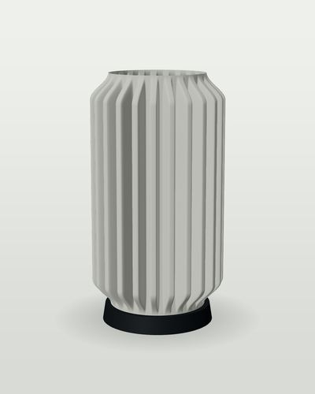
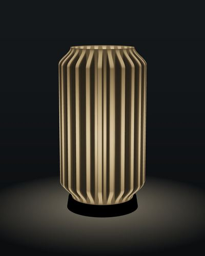</div>
<div class="txt"><p class="ey">Werk · <code>werk-kuehlkoerper</code></p><h3>Kühlkörper</h3><p>24 deep square fins like an aluminium heat sink.</p>
<p class="lim">Fin depth 24 mm on a 1 mm wall; light leaks bright at the fin roots.</p><dl class="m">
<div><dt>Overhang p99</dt><dd><span class="bar ok"><i style="width:76%"></i><b></b></span>46°</dd></div>
<div><dt>H × Ø</dt><dd>300 × 172</dd></div>
<div><dt>Filament</dt><dd>532 g</dd></div>
<div><dt>Print</dt><dd>12.4 h</dd></div>
<div><dt>Price</dt><dd>CHF 249</dd></div>
</dl></div></article><article class="card" data-line="WERK" tabindex="0" aria-label="Turbine">
<div class="img">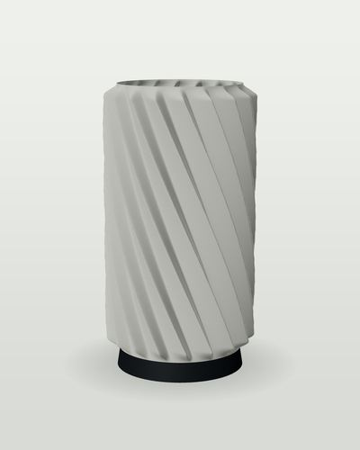
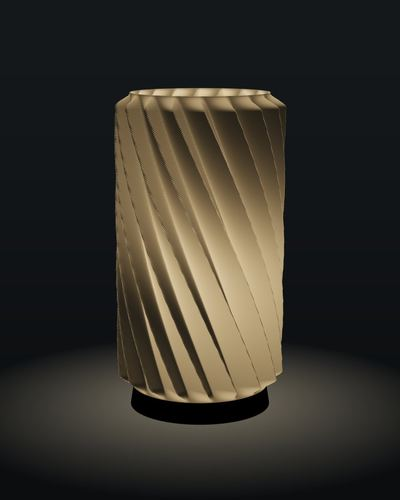</div>
<div class="txt"><p class="ey">Werk · <code>werk-turbine</code></p><h3>Turbine</h3><p>18 sawtooth blades twisting a quarter turn.</p>
<p class="lim">Asymmetric blade flanks: one face catches light, the other shades.</p><dl class="m">
<div><dt>Overhang p99</dt><dd><span class="bar ok"><i style="width:73%"></i><b></b></span>44°</dd></div>
<div><dt>H × Ø</dt><dd>300 × 172</dd></div>
<div><dt>Filament</dt><dd>294 g</dd></div>
<div><dt>Print</dt><dd>6.9 h</dd></div>
<div><dt>Price</dt><dd>CHF 269</dd></div>
</dl></div></article><article class="card" data-line="WERK" tabindex="0" aria-label="Wellblech">
<div class="img">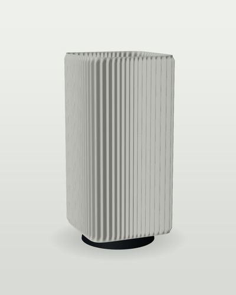
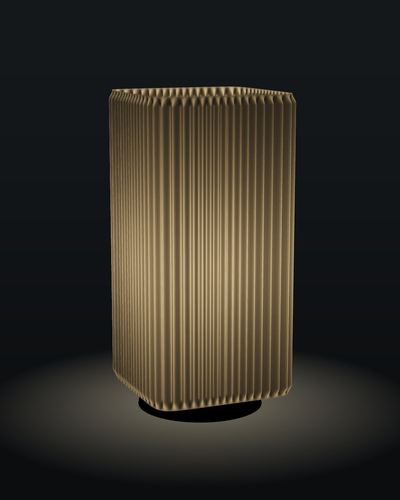</div>
<div class="txt"><p class="ey">Werk · <code>werk-wellblech</code></p><h3>Wellblech</h3><p>Corrugated sheet folded into a square tube.</p>
<p class="lim">64 corrugations on a square section; corners stretch the wave.</p><dl class="m">
<div><dt>Overhang p99</dt><dd><span class="bar ok"><i style="width:32%"></i><b></b></span>19°</dd></div>
<div><dt>H × Ø</dt><dd>320 × 162</dd></div>
<div><dt>Filament</dt><dd>436 g</dd></div>
<div><dt>Print</dt><dd>10.2 h</dd></div>
<div><dt>Price</dt><dd>CHF 229</dd></div>
</dl></div></article><article class="card" data-line="WERK" tabindex="0" aria-label="Kühlturm">
<div class="img">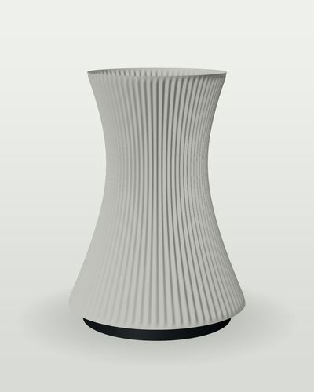
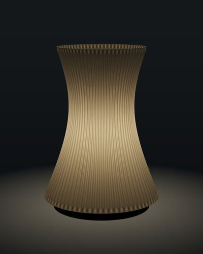</div>
<div class="txt"><p class="ey">Werk · <code>werk-kuehlturm</code></p><h3>Kühlturm</h3><p>Hyperboloid cooling tower with 72 slats.</p>
<p class="lim">Waist narrower than foot and top; light pools at the waist.</p><dl class="m">
<div><dt>Overhang p99</dt><dd><span class="bar ok"><i style="width:44%"></i><b></b></span>26°</dd></div>
<div><dt>H × Ø</dt><dd>320 × 248</dd></div>
<div><dt>Filament</dt><dd>245 g</dd></div>
<div><dt>Print</dt><dd>5.7 h</dd></div>
<div><dt>Price</dt><dd>CHF 239</dd></div>
</dl></div></article><article class="card" data-line="WERK" tabindex="0" aria-label="Balg">
<div class="img">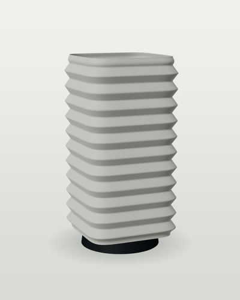
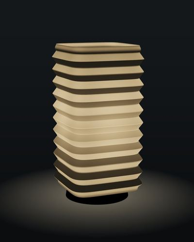</div>
<div class="txt"><p class="ey">Werk · <code>werk-balg</code></p><h3>Balg</h3><p>Square bellows like a machine boot.</p>
<p class="lim">Horizontal folds at 40°: close to the vase-mode limit.</p><dl class="m">
<div><dt>Overhang p99</dt><dd><span class="bar ok"><i style="width:76%"></i><b></b></span>45°</dd></div>
<div><dt>H × Ø</dt><dd>300 × 160</dd></div>
<div><dt>Filament</dt><dd>206 g</dd></div>
<div><dt>Print</dt><dd>4.8 h</dd></div>
<div><dt>Price</dt><dd>CHF 249</dd></div>
</dl></div></article><article class="card" data-line="WERK" tabindex="0" aria-label="Flansch">
<div class="img">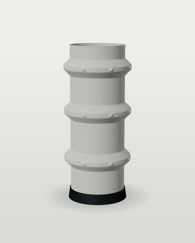
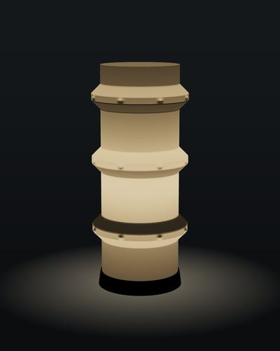</div>
<div class="txt"><p class="ey">Werk · <code>werk-flansch</code></p><h3>Flansch</h3><p>Pipe with three chamfered flanges and bolt heads.</p>
<p class="lim">Flanges stick out 14 mm, built only from 45° chamfers.</p><dl class="m">
<div><dt>Overhang p99</dt><dd><span class="bar ok"><i style="width:75%"></i><b></b></span>45°</dd></div>
<div><dt>H × Ø</dt><dd>320 × 155</dd></div>
<div><dt>Filament</dt><dd>157 g</dd></div>
<div><dt>Print</dt><dd>3.7 h</dd></div>
<div><dt>Price</dt><dd>CHF 259</dd></div>
</dl></div></article><article class="card" data-line="WERK" tabindex="0" aria-label="Gewinde">
<div class="img">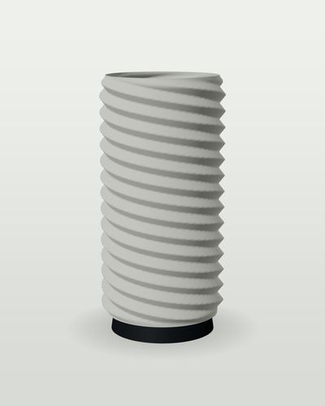
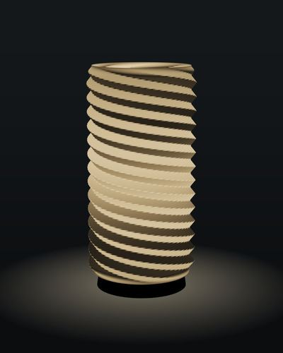</div>
<div class="txt"><p class="ey">Werk · <code>werk-gewinde</code></p><h3>Gewinde</h3><p>Four-start thread, cut deep.</p>
<p class="lim">Thread flanks at 39°, helices read as machined.</p><dl class="m">
<div><dt>Overhang p99</dt><dd><span class="bar ok"><i style="width:74%"></i><b></b></span>45°</dd></div>
<div><dt>H × Ø</dt><dd>300 × 156</dd></div>
<div><dt>Filament</dt><dd>175 g</dd></div>
<div><dt>Print</dt><dd>4.1 h</dd></div>
<div><dt>Price</dt><dd>CHF 249</dd></div>
</dl></div></article><article class="card" data-line="WERK" tabindex="0" aria-label="Zahnrad">
<div class="img">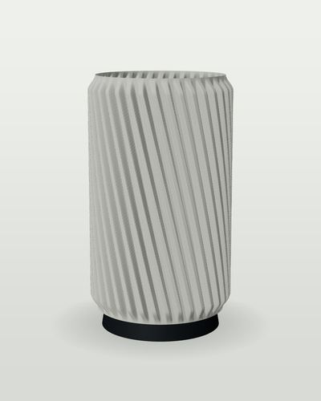
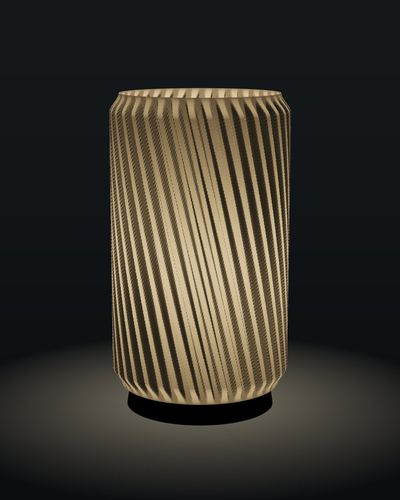</div>
<div class="txt"><p class="ey">Werk · <code>werk-zahnrad</code></p><h3>Zahnrad</h3><p>Helical gear with 36 teeth.</p>
<p class="lim">Sharp tooth flanks in a single wall.</p><dl class="m">
<div><dt>Overhang p99</dt><dd><span class="bar ok"><i style="width:60%"></i><b></b></span>36°</dd></div>
<div><dt>H × Ø</dt><dd>280 × 170</dd></div>
<div><dt>Filament</dt><dd>356 g</dd></div>
<div><dt>Print</dt><dd>8.3 h</dd></div>
<div><dt>Price</dt><dd>CHF 239</dd></div>
</dl></div></article><article class="card" data-line="WERK" tabindex="0" aria-label="Lochblech">
<div class="img">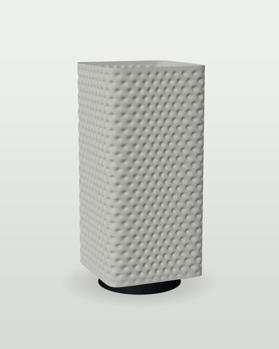
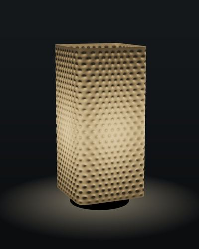</div>
<div class="txt"><p class="ey">Werk · <code>werk-lochblech</code></p><h3>Lochblech</h3><p>Perforated sheet without holes: a hex grid of dimples.</p>
<p class="lim">Vase mode cannot make holes; thin dimples glow like them.</p><dl class="m">
<div><dt>Overhang p99</dt><dd><span class="bar ok"><i style="width:67%"></i><b></b></span>40°</dd></div>
<div><dt>H × Ø</dt><dd>320 × 156</dd></div>
<div><dt>Filament</dt><dd>236 g</dd></div>
<div><dt>Print</dt><dd>5.5 h</dd></div>
<div><dt>Price</dt><dd>CHF 259</dd></div>
</dl></div></article><article class="card" data-line="WERK" tabindex="0" aria-label="Seil">
<div class="img">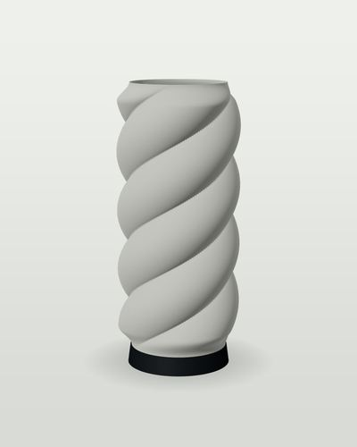
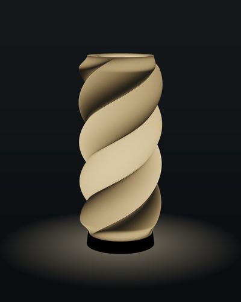</div>
<div class="txt"><p class="ey">Werk · <code>werk-seil</code></p><h3>Seil</h3><p>Three strands laid like steel cable.</p>
<p class="lim">Strand lobes 16 mm deep, 1.5 turns.</p><dl class="m">
<div><dt>Overhang p99</dt><dd><span class="bar ok"><i style="width:80%"></i><b></b></span>48°</dd></div>
<div><dt>H × Ø</dt><dd>320 × 148</dd></div>
<div><dt>Filament</dt><dd>180 g</dd></div>
<div><dt>Print</dt><dd>4.2 h</dd></div>
<div><dt>Price</dt><dd>CHF 249</dd></div>
</dl></div></article><article class="card" data-line="WERK" tabindex="0" aria-label="Profil">
<div class="img">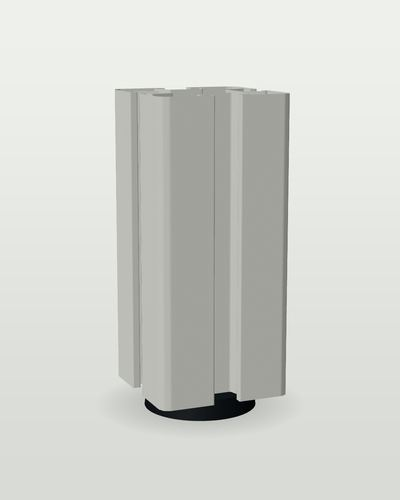
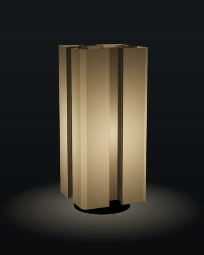</div>
<div class="txt"><p class="ey">Werk · <code>werk-profil</code></p><h3>Profil</h3><p>A T-slot aluminium extrusion profile, scaled to 150 mm.</p>
<p class="lim">Not star-shaped: the outline folds back into undercut T-slots.</p><dl class="m">
<div><dt>Overhang p99</dt><dd><span class="bar ok"><i style="width:0%"></i><b></b></span>0°</dd></div>
<div><dt>H × Ø</dt><dd>330 × 150</dd></div>
<div><dt>Filament</dt><dd>414 g</dd></div>
<div><dt>Print</dt><dd>9.7 h</dd></div>
<div><dt>Price</dt><dd>CHF 289</dd></div>
</dl></div></article><article class="card" data-line="WERK" tabindex="0" aria-label="Profil Twist">
<div class="img">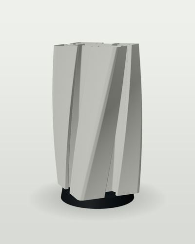
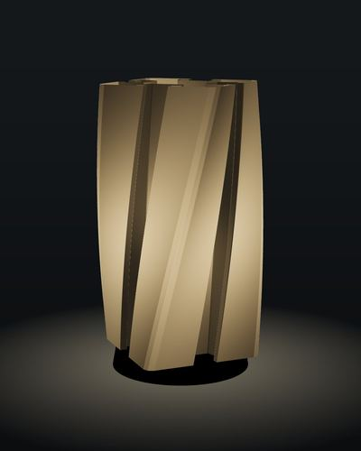</div>
<div class="txt"><p class="ey">Werk · <code>werk-profil-twist</code></p><h3>Profil Twist</h3><p>The T-slot profile twisted 45°.</p>
<p class="lim">Undercut slots that also spiral.</p><dl class="m">
<div><dt>Overhang p99</dt><dd><span class="bar ok"><i style="width:17%"></i><b></b></span>10°</dd></div>
<div><dt>H × Ø</dt><dd>330 × 203</dd></div>
<div><dt>Filament</dt><dd>414 g</dd></div>
<div><dt>Print</dt><dd>9.7 h</dd></div>
<div><dt>Price</dt><dd>CHF 319</dd></div>
</dl></div></article><article class="card" data-line="WERK" tabindex="0" aria-label="Träger">
<div class="img">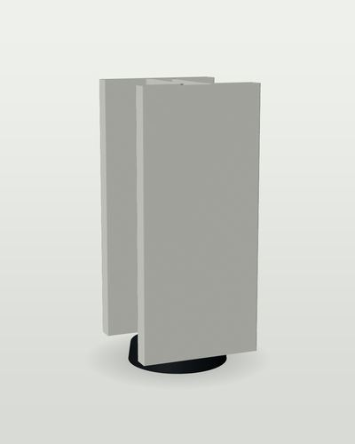
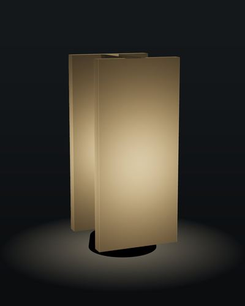</div>
<div class="txt"><p class="ey">Werk · <code>werk-traeger</code></p><h3>Träger</h3><p>An I-beam, standing up, light coming out of its web.</p>
<p class="lim">Two flanges and a web from one wall; the web gap is 26 mm.</p><dl class="m">
<div><dt>Overhang p99</dt><dd><span class="bar ok"><i style="width:0%"></i><b></b></span>0°</dd></div>
<div><dt>H × Ø</dt><dd>330 × 150</dd></div>
<div><dt>Filament</dt><dd>341 g</dd></div>
<div><dt>Print</dt><dd>7.9 h</dd></div>
<div><dt>Price</dt><dd>CHF 279</dd></div>
</dl></div></article></div></section><section class="line" data-section="GRENZE"><header class="lh"><h2>Grenze</h2><p>Experiments at the edge of vase mode: deep folds, morphs, leaning axes, hundreds of bumps, glitches. Small editions, gallery pieces, press.</p><span>9</span></header><div class="grid"><article class="card" data-line="GRENZE" tabindex="0" aria-label="Stern">
<div class="img">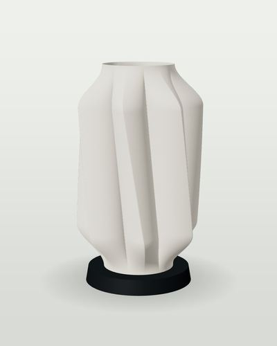
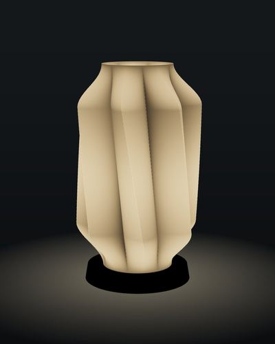</div>
<div class="txt"><p class="ey">Grenze · <code>grenze-stern</code></p><h3>Stern</h3><p>Seven folds 42 mm deep.</p>
<p class="lim">Fold depth close to the radius: the wall nearly doubles back.</p><dl class="m">
<div><dt>Overhang p99</dt><dd><span class="bar ok"><i style="width:70%"></i><b></b></span>42°</dd></div>
<div><dt>H × Ø</dt><dd>300 × 188</dd></div>
<div><dt>Filament</dt><dd>286 g</dd></div>
<div><dt>Print</dt><dd>6.7 h</dd></div>
<div><dt>Price</dt><dd>CHF 289</dd></div>
</dl></div></article><article class="card" data-line="GRENZE" tabindex="0" aria-label="Morph">
<div class="img">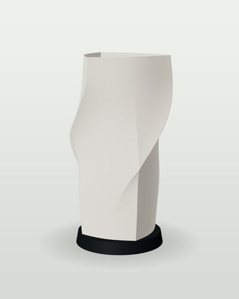
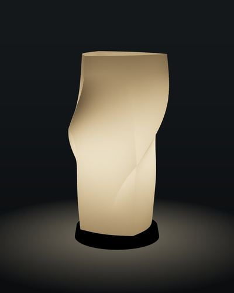</div>
<div class="txt"><p class="ey">Grenze · <code>grenze-morph</code></p><h3>Morph</h3><p>Square foot, triangular top, a quarter turn between.</p>
<p class="lim">Section changes topology class while twisting.</p><dl class="m">
<div><dt>Overhang p99</dt><dd><span class="bar ok"><i style="width:40%"></i><b></b></span>24°</dd></div>
<div><dt>H × Ø</dt><dd>320 × 190</dd></div>
<div><dt>Filament</dt><dd>195 g</dd></div>
<div><dt>Print</dt><dd>4.6 h</dd></div>
<div><dt>Price</dt><dd>CHF 279</dd></div>
</dl></div></article><article class="card" data-line="GRENZE" tabindex="0" aria-label="Knoten">
<div class="img">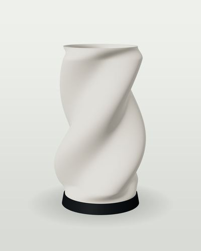
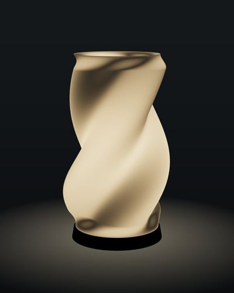</div>
<div class="txt"><p class="ey">Grenze · <code>grenze-knoten</code></p><h3>Knoten</h3><p>Trefoil section turning three quarters, breathing.</p>
<p class="lim">Twist plus lobes: tilt near the limit on the lobe flanks.</p><dl class="m">
<div><dt>Overhang p99</dt><dd><span class="bar ok"><i style="width:70%"></i><b></b></span>42°</dd></div>
<div><dt>H × Ø</dt><dd>320 × 202</dd></div>
<div><dt>Filament</dt><dd>211 g</dd></div>
<div><dt>Print</dt><dd>4.9 h</dd></div>
<div><dt>Price</dt><dd>CHF 279</dd></div>
</dl></div></article><article class="card" data-line="GRENZE" tabindex="0" aria-label="Schieflage">
<div class="img">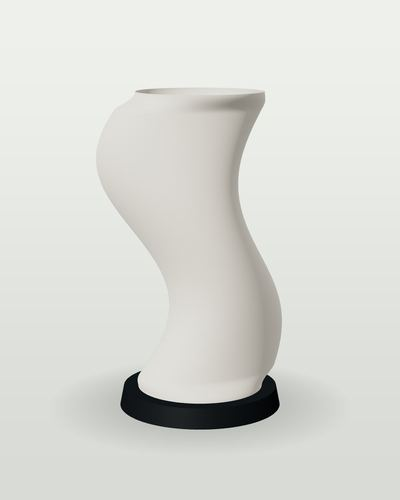
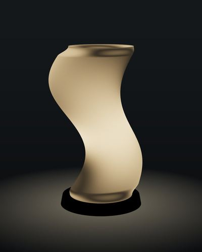</div>
<div class="txt"><p class="ey">Grenze · <code>grenze-schieflage</code></p><h3>Schieflage</h3><p>Leaning: the axis drifts 35 mm in an S.</p>
<p class="lim">The whole lamp leans; tilt comes from the drift, not the pattern.</p><dl class="m">
<div><dt>Overhang p99</dt><dd><span class="bar ok"><i style="width:79%"></i><b></b></span>47°</dd></div>
<div><dt>H × Ø</dt><dd>330 × 215</dd></div>
<div><dt>Filament</dt><dd>183 g</dd></div>
<div><dt>Print</dt><dd>4.3 h</dd></div>
<div><dt>Price</dt><dd>CHF 299</dd></div>
</dl></div></article><article class="card" data-line="GRENZE" tabindex="0" aria-label="Zapfen">
<div class="img">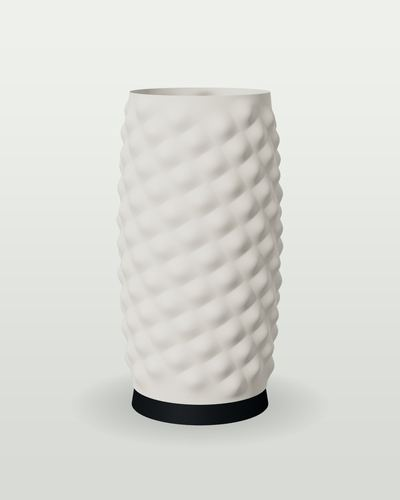
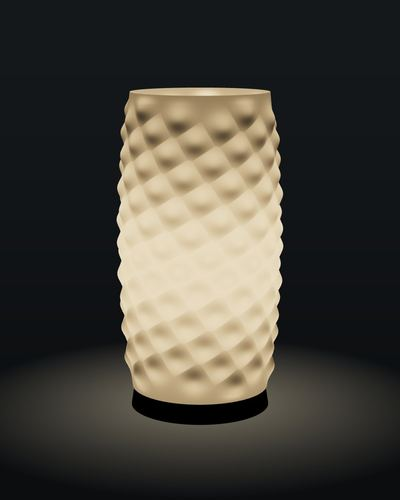</div>
<div class="txt"><p class="ey">Grenze · <code>grenze-phyllotaxis</code></p><h3>Zapfen</h3><p>170 bumps on the golden angle, like a pine cone.</p>
<p class="lim">Hundreds of local overhangs, each kept under 40°.</p><dl class="m">
<div><dt>Overhang p99</dt><dd><span class="bar ok"><i style="width:47%"></i><b></b></span>28°</dd></div>
<div><dt>H × Ø</dt><dd>320 × 180</dd></div>
<div><dt>Filament</dt><dd>220 g</dd></div>
<div><dt>Print</dt><dd>5.1 h</dd></div>
<div><dt>Price</dt><dd>CHF 319</dd></div>
</dl></div></article><article class="card" data-line="GRENZE" tabindex="0" aria-label="Fraktal">
<div class="img">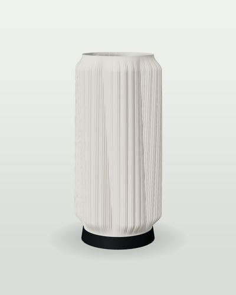
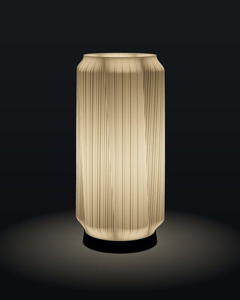</div>
<div class="txt"><p class="ey">Grenze · <code>grenze-fraktal</code></p><h3>Fraktal</h3><p>Folds within folds: 6, 36 and 144 pleats.</p>
<p class="lim">Three scales of detail, the finest at 2.5 mm pitch.</p><dl class="m">
<div><dt>Overhang p99</dt><dd><span class="bar ok"><i style="width:66%"></i><b></b></span>40°</dd></div>
<div><dt>H × Ø</dt><dd>320 × 163</dd></div>
<div><dt>Filament</dt><dd>243 g</dd></div>
<div><dt>Print</dt><dd>5.7 h</dd></div>
<div><dt>Price</dt><dd>CHF 299</dd></div>
</dl></div></article><article class="card" data-line="GRENZE" tabindex="0" aria-label="Glitch">
<div class="img">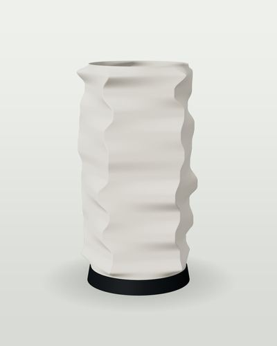
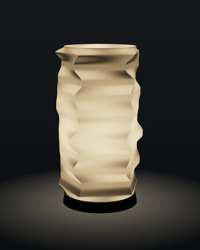</div>
<div class="txt"><p class="ey">Grenze · <code>grenze-glitch</code></p><h3>Glitch</h3><p>Pentagon bands rotated and scaled at random.</p>
<p class="lim">Hard digital steps made printable with 21 mm ramps.</p><dl class="m">
<div><dt>Overhang p99</dt><dd><span class="bar ok"><i style="width:82%"></i><b></b></span>50°</dd></div>
<div><dt>H × Ø</dt><dd>312 × 190</dd></div>
<div><dt>Filament</dt><dd>202 g</dd></div>
<div><dt>Print</dt><dd>4.7 h</dd></div>
<div><dt>Price</dt><dd>CHF 279</dd></div>
</dl></div></article><article class="card" data-line="GRENZE" tabindex="0" aria-label="Kaskade">
<div class="img">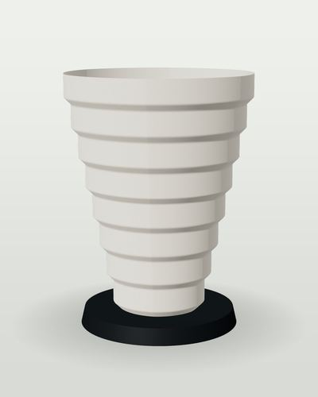
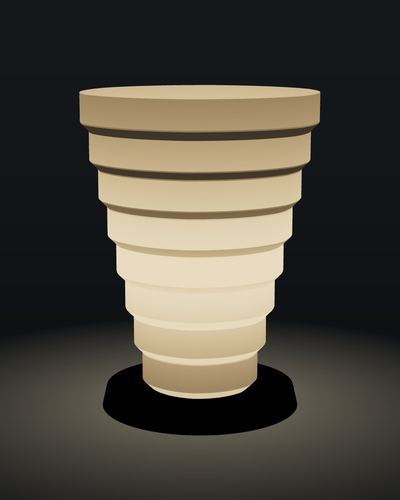</div>
<div class="txt"><p class="ey">Grenze · <code>grenze-kaskade</code></p><h3>Kaskade</h3><p>Hexagonal terraces stepping outward like a pagoda.</p>
<p class="lim">Every step is a pure 45° chamfer.</p><dl class="m">
<div><dt>Overhang p99</dt><dd><span class="bar ok"><i style="width:76%"></i><b></b></span>45°</dd></div>
<div><dt>H × Ø</dt><dd>320 × 256</dd></div>
<div><dt>Filament</dt><dd>226 g</dd></div>
<div><dt>Print</dt><dd>5.3 h</dd></div>
<div><dt>Price</dt><dd>CHF 269</dd></div>
</dl></div></article><article class="card" data-line="GRENZE" tabindex="0" aria-label="Topo">
<div class="img">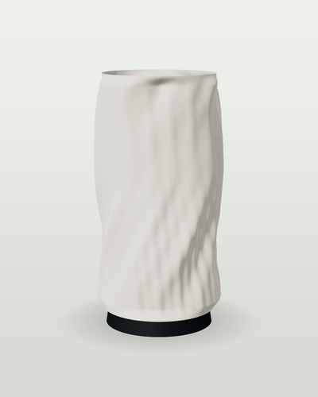
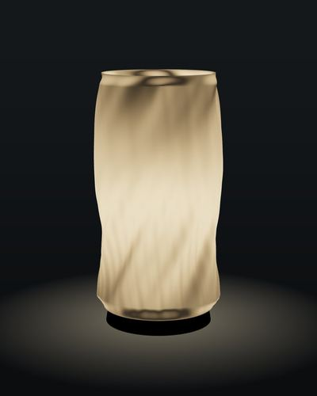</div>
<div class="txt"><p class="ey">Grenze · <code>grenze-topo</code></p><h3>Topo</h3><p>A noise landscape: every layer line becomes a contour line.</p>
<p class="lim">Layer lines become the drawing.</p><dl class="m">
<div><dt>Overhang p99</dt><dd><span class="bar ok"><i style="width:63%"></i><b></b></span>38°</dd></div>
<div><dt>H × Ø</dt><dd>320 × 174</dd></div>
<div><dt>Filament</dt><dd>193 g</dd></div>
<div><dt>Print</dt><dd>4.5 h</dd></div>
<div><dt>Price</dt><dd>CHF 289</dd></div>
</dl></div></article></div></section><section class="line" data-section="TOTEM"><header class="lh"><h2>Totem</h2><p>A modular system. Every module has the same Ø140 plug: a collar below and a spigot above. Print modules separately and stack them in any order, in any colour.</p><span>6 stacks</span></header><div class="grid stacks"><article class="card" data-line="TOTEM" tabindex="0" aria-label="Totem Industrie">
<div class="img">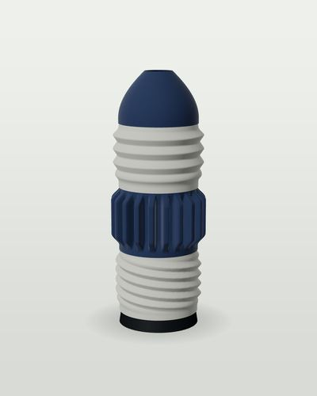
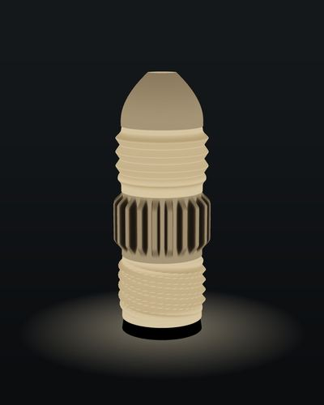</div>
<div class="txt"><p class="ey">Totem · <code>totem-industrie</code></p><h3>Totem Industrie</h3><p>Stack of 4 modules.</p>
<ol class="chips"><li class="t-stein">Gewinde</li><li class="t-nacht">Kühlrippe</li><li class="t-stein">Balg</li><li class="t-nacht">Kuppel</li></ol><dl class="m"><div><dt>Height</dt><dd>426 mm</dd></div><div><dt>Modules</dt><dd>4</dd></div>
<div><dt>Filament</dt><dd>331 g</dd></div><div><dt>Print</dt><dd>7.7 h</dd></div><div><dt>Price</dt><dd>CHF 329</dd></div></dl></div></article><article class="card" data-line="TOTEM" tabindex="0" aria-label="Totem Licht">
<div class="img">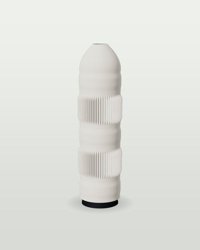
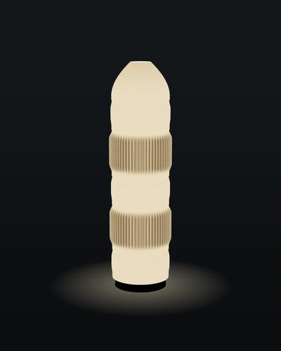</div>
<div class="txt"><p class="ey">Totem · <code>totem-licht</code></p><h3>Totem Licht</h3><p>Stack of 6 modules.</p>
<ol class="chips"><li class="t-frost">Glatt</li><li class="t-frost">Rippe</li><li class="t-frost">Glatt</li><li class="t-frost">Rippe</li><li class="t-frost">Glatt</li><li class="t-frost">Kuppel</li></ol><dl class="m"><div><dt>Height</dt><dd>530 mm</dd></div><div><dt>Modules</dt><dd>6</dd></div>
<div><dt>Filament</dt><dd>499 g</dd></div><div><dt>Print</dt><dd>11.6 h</dd></div><div><dt>Price</dt><dd>CHF 409</dd></div></dl></div></article><article class="card" data-line="TOTEM" tabindex="0" aria-label="Schichtwechsel">
<div class="img">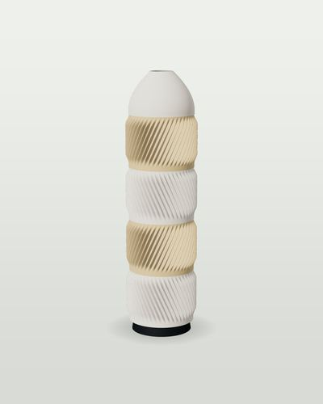
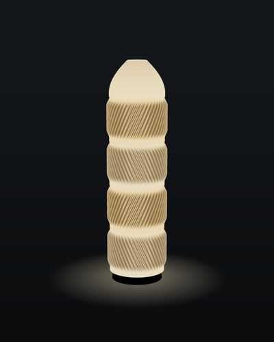</div>
<div class="txt"><p class="ey">Totem · <code>schichtwechsel</code></p><h3>Schichtwechsel</h3><p>Stack of 5 modules.</p>
<ol class="chips"><li class="t-frost">Twist rechts</li><li class="t-sand">Twist links</li><li class="t-frost">Twist rechts</li><li class="t-sand">Twist links</li><li class="t-frost">Kuppel</li></ol><dl class="m"><div><dt>Height</dt><dd>538 mm</dd></div><div><dt>Modules</dt><dd>5</dd></div>
<div><dt>Filament</dt><dd>638 g</dd></div><div><dt>Print</dt><dd>15.0 h</dd></div><div><dt>Price</dt><dd>CHF 399</dd></div></dl></div></article><article class="card" data-line="TOTEM" tabindex="0" aria-label="Kontrast">
<div class="img">
</div>
<div class="txt"><p class="ey">Totem · <code>kontrast</code></p><h3>Kontrast</h3><p>Stack of 6 modules.</p>
<ol class="chips"><li class="t-nacht">Polster</li><li class="t-frost">Glatt</li><li class="t-nacht">Polster</li><li class="t-frost">Glatt</li><li class="t-nacht">Polster</li><li class="t-nacht">Kuppel</li></ol><dl class="m"><div><dt>Height</dt><dd>450 mm</dd></div><div><dt>Modules</dt><dd>6</dd></div>
<div><dt>Filament</dt><dd>279 g</dd></div><div><dt>Print</dt><dd>6.3 h</dd></div><div><dt>Price</dt><dd>CHF 369</dd></div></dl></div></article><article class="card" data-line="TOTEM" tabindex="0" aria-label="Eisberg">
<div class="img">
</div>
<div class="txt"><p class="ey">Totem · <code>eisberg</code></p><h3>Eisberg</h3><p>Stack of 4 modules.</p>
<ol class="chips"><li class="t-frost">Spalt</li><li class="t-frost">Spalt</li><li class="t-frost">Glatt</li><li class="t-frost">Kuppel</li></ol><dl class="m"><div><dt>Height</dt><dd>386 mm</dd></div><div><dt>Modules</dt><dd>4</dd></div>
<div><dt>Filament</dt><dd>229 g</dd></div><div><dt>Print</dt><dd>5.2 h</dd></div><div><dt>Price</dt><dd>CHF 319</dd></div></dl></div></article><article class="card" data-line="TOTEM" tabindex="0" aria-label="Maschine">
<div class="img">
</div>
<div class="txt"><p class="ey">Totem · <code>maschine</code></p><h3>Maschine</h3><p>Stack of 6 modules.</p>
<ol class="chips"><li class="t-stein">Kühlrippe</li><li class="t-stein">Gewinde</li><li class="t-stein">Kühlrippe</li><li class="t-stein">Gewinde</li><li class="t-stein">Kühlrippe</li><li class="t-stein">Kuppel</li></ol><dl class="m"><div><dt>Height</dt><dd>650 mm</dd></div><div><dt>Modules</dt><dd>6</dd></div>
<div><dt>Filament</dt><dd>630 g</dd></div><div><dt>Print</dt><dd>14.7 h</dd></div><div><dt>Price</dt><dd>CHF 469</dd></div></dl></div></article></div><h3 class="sub">The modules</h3><div class="grid mods"><article class="card" data-line="TOTEM" tabindex="0" aria-label="Glatt">
<div class="img">
</div>
<div class="txt"><p class="ey">Totem · <code>m-glatt</code></p><h3>Glatt</h3><p>TOTEM module, Ø140 plug.</p>
<p class="lim">Collar below, spigot above: stacks on any other module.</p><dl class="m">
<div><dt>Overhang p99</dt><dd><span class="bar ok"><i style="width:22%"></i><b></b></span>13°</dd></div>
<div><dt>H × Ø</dt><dd>80 × 144</dd></div>
<div><dt>Filament</dt><dd>45 g</dd></div>
<div><dt>Print</dt><dd>1.0 h</dd></div>
<div><dt>Price</dt><dd>CHF 49</dd></div>
</dl></div></article><article class="card" data-line="TOTEM" tabindex="0" aria-label="Rippe">
<div class="img">
</div>
<div class="txt"><p class="ey">Totem · <code>m-rippe</code></p><h3>Rippe</h3><p>TOTEM module, Ø140 plug.</p>
<p class="lim">Collar below, spigot above: stacks on any other module.</p><dl class="m">
<div><dt>Overhang p99</dt><dd><span class="bar ok"><i style="width:35%"></i><b></b></span>21°</dd></div>
<div><dt>H × Ø</dt><dd>120 × 152</dd></div>
<div><dt>Filament</dt><dd>161 g</dd></div>
<div><dt>Print</dt><dd>3.8 h</dd></div>
<div><dt>Price</dt><dd>CHF 69</dd></div>
</dl></div></article><article class="card" data-line="TOTEM" tabindex="0" aria-label="Twist rechts">
<div class="img">
</div>
<div class="txt"><p class="ey">Totem · <code>m-twist-r</code></p><h3>Twist rechts</h3><p>TOTEM module, Ø140 plug.</p>
<p class="lim">Collar below, spigot above: stacks on any other module.</p><dl class="m">
<div><dt>Overhang p99</dt><dd><span class="bar ok"><i style="width:51%"></i><b></b></span>30°</dd></div>
<div><dt>H × Ø</dt><dd>120 × 153</dd></div>
<div><dt>Filament</dt><dd>149 g</dd></div>
<div><dt>Print</dt><dd>3.5 h</dd></div>
<div><dt>Price</dt><dd>CHF 69</dd></div>
</dl></div></article><article class="card" data-line="TOTEM" tabindex="0" aria-label="Twist links">
<div class="img">
</div>
<div class="txt"><p class="ey">Totem · <code>m-twist-l</code></p><h3>Twist links</h3><p>TOTEM module, Ø140 plug.</p>
<p class="lim">Collar below, spigot above: stacks on any other module.</p><dl class="m">
<div><dt>Overhang p99</dt><dd><span class="bar ok"><i style="width:60%"></i><b></b></span>36°</dd></div>
<div><dt>H × Ø</dt><dd>120 × 153</dd></div>
<div><dt>Filament</dt><dd>149 g</dd></div>
<div><dt>Print</dt><dd>3.5 h</dd></div>
<div><dt>Price</dt><dd>CHF 69</dd></div>
</dl></div></article><article class="card" data-line="TOTEM" tabindex="0" aria-label="Balg">
<div class="img">
</div>
<div class="txt"><p class="ey">Totem · <code>m-balg</code></p><h3>Balg</h3><p>TOTEM module, Ø140 plug.</p>
<p class="lim">Collar below, spigot above: stacks on any other module.</p><dl class="m">
<div><dt>Overhang p99</dt><dd><span class="bar ok"><i style="width:76%"></i><b></b></span>46°</dd></div>
<div><dt>H × Ø</dt><dd>120 × 160</dd></div>
<div><dt>Filament</dt><dd>70 g</dd></div>
<div><dt>Print</dt><dd>1.6 h</dd></div>
<div><dt>Price</dt><dd>CHF 59</dd></div>
</dl></div></article><article class="card" data-line="TOTEM" tabindex="0" aria-label="Polster">
<div class="img">
</div>
<div class="txt"><p class="ey">Totem · <code>m-polster</code></p><h3>Polster</h3><p>TOTEM module, Ø140 plug.</p>
<p class="lim">Collar below, spigot above: stacks on any other module.</p><dl class="m">
<div><dt>Overhang p99</dt><dd><span class="bar ok"><i style="width:60%"></i><b></b></span>36°</dd></div>
<div><dt>H × Ø</dt><dd>80 × 153</dd></div>
<div><dt>Filament</dt><dd>49 g</dd></div>
<div><dt>Print</dt><dd>1.1 h</dd></div>
<div><dt>Price</dt><dd>CHF 49</dd></div>
</dl></div></article><article class="card" data-line="TOTEM" tabindex="0" aria-label="Spalt">
<div class="img">
</div>
<div class="txt"><p class="ey">Totem · <code>m-spalt</code></p><h3>Spalt</h3><p>TOTEM module, Ø140 plug.</p>
<p class="lim">Collar below, spigot above: stacks on any other module.</p><dl class="m">
<div><dt>Overhang p99</dt><dd><span class="bar ok"><i style="width:73%"></i><b></b></span>44°</dd></div>
<div><dt>H × Ø</dt><dd>120 × 148</dd></div>
<div><dt>Filament</dt><dd>71 g</dd></div>
<div><dt>Print</dt><dd>1.6 h</dd></div>
<div><dt>Price</dt><dd>CHF 69</dd></div>
</dl></div></article><article class="card" data-line="TOTEM" tabindex="0" aria-label="Kühlrippe">
<div class="img">
</div>
<div class="txt"><p class="ey">Totem · <code>m-kuehl</code></p><h3>Kühlrippe</h3><p>TOTEM module, Ø140 plug.</p>
<p class="lim">Collar below, spigot above: stacks on any other module.</p><dl class="m">
<div><dt>Overhang p99</dt><dd><span class="bar ok"><i style="width:75%"></i><b></b></span>45°</dd></div>
<div><dt>H × Ø</dt><dd>120 × 168</dd></div>
<div><dt>Filament</dt><dd>150 g</dd></div>
<div><dt>Print</dt><dd>3.5 h</dd></div>
<div><dt>Price</dt><dd>CHF 79</dd></div>
</dl></div></article><article class="card" data-line="TOTEM" tabindex="0" aria-label="Gewinde">
<div class="img">
</div>
<div class="txt"><p class="ey">Totem · <code>m-gewinde</code></p><h3>Gewinde</h3><p>TOTEM module, Ø140 plug.</p>
<p class="lim">Collar below, spigot above: stacks on any other module.</p><dl class="m">
<div><dt>Overhang p99</dt><dd><span class="bar ok"><i style="width:72%"></i><b></b></span>43°</dd></div>
<div><dt>H × Ø</dt><dd>120 × 154</dd></div>
<div><dt>Filament</dt><dd>69 g</dd></div>
<div><dt>Print</dt><dd>1.6 h</dd></div>
<div><dt>Price</dt><dd>CHF 59</dd></div>
</dl></div></article><article class="card" data-line="TOTEM" tabindex="0" aria-label="Kuppel">
<div class="img">
</div>
<div class="txt"><p class="ey">Totem · <code>m-kuppel</code></p><h3>Kuppel</h3><p>Closing dome, the top of every stack.</p>
<p class="lim">Closes to a 40 mm vent.</p><dl class="m">
<div><dt>Overhang p99</dt><dd><span class="bar ok"><i style="width:76%"></i><b></b></span>46°</dd></div>
<div><dt>H × Ø</dt><dd>90 × 140</dd></div>
<div><dt>Filament</dt><dd>42 g</dd></div>
<div><dt>Print</dt><dd>1.0 h</dd></div>
<div><dt>Price</dt><dd>CHF 39</dd></div>
</dl></div></article></div></section><section class="line" data-section="DUO"><header class="lh"><h2>Duo</h2><p>Two shades nested inside each other. Switched off they look calm; lit, the patterns interfere and move as you walk past.</p><span>2</span></header><div class="grid"><article class="card" data-line="DUO" tabindex="0" aria-label="Interferenz">
<div class="img">
</div>
<div class="txt"><p class="ey">Duo · <code>duo-interferenz</code></p><h3>Interferenz</h3><p>Two ribbed shells nested 16 mm apart. Switched off they look plain; lit, moiré bands appear and move as you walk past.</p>
<dl class="m"><div><dt>Outer / inner</dt><dd>Ø 187 / 155</dd></div>
<div><dt>Filament</dt><dd>551 g</dd></div><div><dt>Print</dt><dd>12.8 h</dd></div><div><dt>Price</dt><dd>CHF 390</dd></div></dl></div></article><article class="card" data-line="DUO" tabindex="0" aria-label="Kühlkern">
<div class="img">
</div>
<div class="txt"><p class="ey">Duo · <code>duo-kuehlkern</code></p><h3>Kühlkern</h3><p>The heat sink with a frosted core inside: the fins become dark blades against a glowing column.</p>
<dl class="m"><div><dt>Outer / inner</dt><dd>Ø 172 / 104</dd></div>
<div><dt>Filament</dt><dd>654 g</dd></div><div><dt>Print</dt><dd>15.2 h</dd></div><div><dt>Price</dt><dd>CHF 329</dd></div></dl></div></article></div></section></main>
<footer class="wrap foot">
  <p>Renders of the print-ready models, PLA, 2700 K light. Overhang is the wall's tilt from vertical (99th percentile); the tick marks the 50° limit. Filament and print time assume a 1.0 mm wall, 0.24 mm layers and 40 mm/s.</p>
  <p>Export: <code>python3 concepts.py werk-gewinde --res fine</code>. Stacks: print each module separately and plug them together. Prices are suggestions; stack prices include a base with electrics.</p>
</footer>
<script>
(function () {
  var lit = false, btn = document.getElementById('lights');
  btn.addEventListener('click', function () { lit = !lit; document.body.classList.toggle('lit', lit);
    btn.setAttribute('aria-pressed', lit); btn.textContent = lit ? 'Switch all lights off' : 'Switch all lights on';
    document.querySelectorAll('.card.flip').forEach(function (c) { c.classList.remove('flip'); }); });
  document.querySelectorAll('.card').forEach(function (c) {
    function t() { c.classList.toggle('flip'); }
    c.addEventListener('click', t);
    c.addEventListener('keydown', function (e) { if (e.key === 'Enter' || e.key === ' ') { e.preventDefault(); t(); } });
  });
  var chips = document.querySelectorAll('.chip');
  chips.forEach(function (ch) { ch.addEventListener('click', function () {
    var f = ch.getAttribute('data-f');
    chips.forEach(function (x) { x.setAttribute('aria-pressed', x === ch); });
    document.querySelectorAll('[data-section]').forEach(function (s) { s.hidden = !(f === 'all' || s.getAttribute('data-section') === f); });
  }); });
})();
</script>
